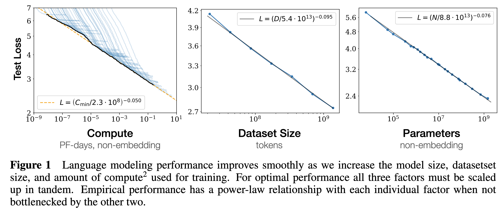
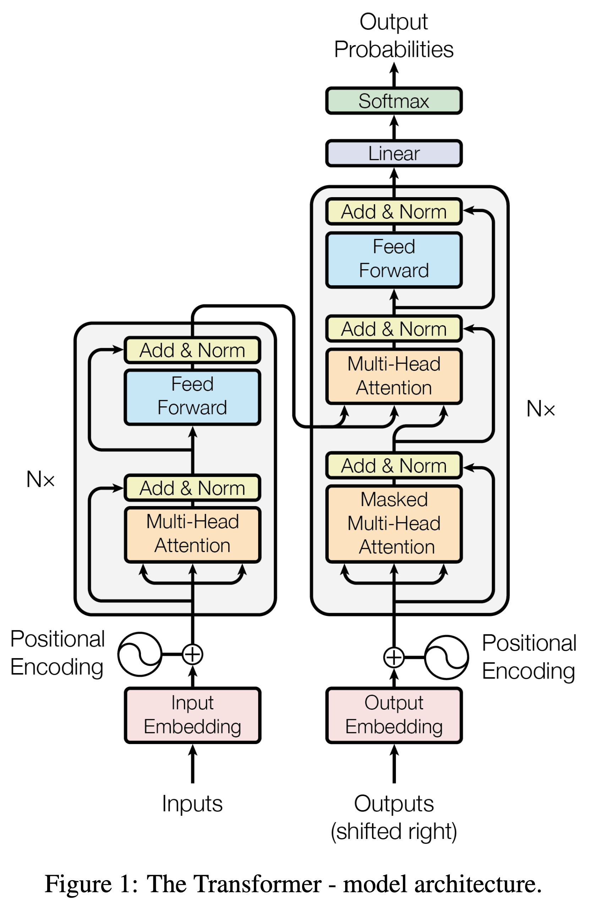
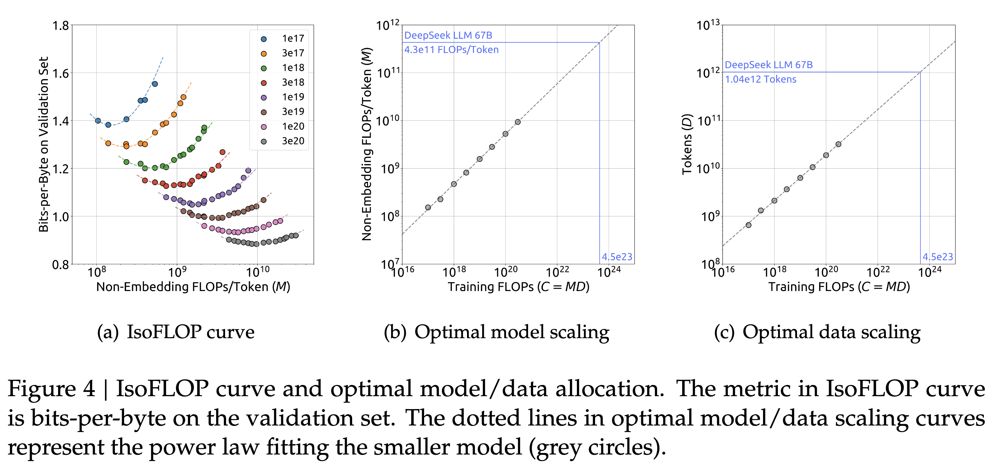

Empirical Finance - Research Proposal
Finding Scaling Laws in Financial data
Jiyan Schneider
Keio University, Graduate school of Economics
Introduction
- Recent breakthroughs in AI, particularly Large Language Models (LLMs), have been driven by the “scaling hypothesis.”
- Scaling Hypothesis: Performance of a model predictably improves as we increase resources (model size, data, compute).
- This relationship often follows a smooth power law, making progress measurable and forecastable.
- Research Question: Can similar scaling laws be identified in the domain of quantitative finance?

Taken from (Kaplan et al. 2020)
Proposal of idea
- This research proposes to systematically investigate the existence of scaling laws in financial forecasting.
- We test the hypothesis that a financial model’s performance (e.g., predictive accuracy) scales as a power-law with:
- Model Size (N): The number of parameters in the model.
- Data Size (D): The volume of historical data used for training.
- The goal is to fit an empirical formula, similar to those found in LLMs: \[ L(N, D) \approx E_{\text{irred}} + \frac{A}{N^\alpha} + \frac{B}{D^\beta} \] where L is the prediction loss.
Results
 Figure taken from (Hoffmann et al. 2022)
Figure taken from (Hoffmann et al. 2022)
Motivation
- Practical: If scaling laws hold, we can optimize resource allocation.
- Avoids costly trial-and-error in model development.
- Allows us to forecast the “return on investment” for acquiring more data or training larger models.
- Informs optimal model design, analogous to how Hoffmann et al. (2022) found smaller models trained on more data were optimal.
- Theoretical:
- Provides a new framework for understanding the limits of predictability in financial markets.
- The “irreducible error” term (\(E_{irred}\)) in the scaling law could be interpreted as a measure of fundamental market efficiency or noise.
- Feasible:
- Scaling laws seem to hold even on quite small scales so you don’t need a 1024 H100 machines.
Background
Initial Scaling law research
- Kaplan et al. (2020), “Scaling Laws for Neural Language Models” (Kaplan et al. 2020)
- First to comprehensively demonstrate that LLM loss scales smoothly as a power-law with model size, dataset size, and training compute.
- Their findings suggested that for best performance, model size should be the primary focus of scaling efforts.
- Hoffmann et al. (2022), “Training Compute-Optimal Large Language Models” (Hoffmann et al. 2022)
- Refined Kaplan’s work. By their analysis, for optimal performance under a fixed compute budget, model size and dataset size should be scaled in roughly equal proportion.
- Their model, “Chinchilla,” though much smaller than competitors like Gopher (or GPT-3), outperformed them by being trained on significantly more data.
- We want to apply the methodologies of these papers to a financial context
Current research
- The “scaling” approach is a proven framework for making progress in complex domains by making it predictable and measurable.
- It has been used to:
- Guide massive investments in Large Language Models. ((Kaplan et al. 2020))
- Discover optimal model architectures and data-to-model size ratios (Hoffmann et al. 2022; DeepSeek-AI et al. 2024)
- Achieve breakthroughs in computer vision. (Zhai et al. 2022)
- The existence of bad scaling laws with audio cause pessism and leads people to pivot into new research directions (Cuervo and Marxer 2024; Maimon et al. 2025)
- Our goal is to bring these same benefits to quantitative finance:
- Practical: Forecast the ROI of compute/data, optimize resource allocation, and avoid costly trial-and-error.
- Theoretical: Create a new framework for measuring market predictability and estimating the “irreducible” market noise (\(E_{\text{irred}}\)).
Methodology
Data
- We use high-frequency trade and quote (TAQ) data for a broad set of US equities (e.g., S&P 500 components).
- Period: 2010-2023, providing a large dataset to sample from.
- Prediction Task: Predict the sign and magnitude of the mid-price change over the next 10 seconds based on the previous 60 seconds of order book and trade data. This is a simple, well-defined, and computationally tractable task.
- Only train for a single Epoch at most
- Extensively care that we do not use future data to evaluate our models
Methods
Use the ISOFlop approach (Approach 2 from (Hoffmann et al. 2022))
- Define Model Architecture:
- A simple, scalable state of the art neural network. (Transformer-based, decoder only, unidirectional)
- Define Compute Budgets:
- Pick compute budget: number of FLOPs E.g., \( \{10^{18}, 10^{19}, 10^{20 }\} \) FLOPs
- Model Training & Evaluation: Train slighly different models on Slightly different amounts of data, record final loss.
- Analysis: Plot the final loss for each model against its size and estimate the log-log relationship
- If possible: Train a final big model and log-log relationship prediction to actual performance
Transformer mdoel

Figure taken from (Vaswani et al. 2017)
Isoflop Curve
 Figure taken from Hoffman
Method of evaluation
- Forecast error: final cross-entropy vs baseline logit model (y-axis log-transformed).
- Economic value: out-of-sample Sharpe ratio of a pure signal-driven strategy.
- Increasing \( R^{2} \)s in the log-log relationship would validate the scaling hypothesis.
- However considering other
- We analyze the estimated exponents \( \alpha \) and \( \beta \). These determine the relative importance of model size vs. data size for financial prediction.
- As a secondary, economic evaluation, we can construct a simple trading strategy based on the predictions of the best models to gauge their potential profitability (e.g., Sharpe ratio).
Limitations and plans
- Computational Cost: Training a large grid of models is resource-intensive.
- Plan: Start with a smaller-scale pilot study. Utilize university high-performance computing (HPC) resources or cloud credits.
- Evalution Criteria: Is our current criteria \( R^{2} \) actually amenable for these scaling laws?
- Data Non-stationarity: Financial markets evolve, which may complicate the scaling relationship.
- Generalizability: Results might be specific to our chosen task, data, or model architecture.
- Plan: If time permits, test a secondary task (e.g., volatility prediction) or a different model family (e.g., an LSTM).
Bibliography
Cuervo, Santiago, and Ricard Marxer. 2024. “Scaling Properties of Speech Language Models.” In Proceedings of the 2024 Conference on Empirical Methods in Natural Language Processing, 351–61.
DeepSeek-AI, Xiao Bi, Deli Chen, Guanting Chen, Shanhuang Chen, Damai Dai, Chengqi Deng, et al. 2024. “DeepSeek LLM: Scaling Open-Source Language Models with Longtermism.” arXiv.
Hoffmann, Jordan, Sebastian Borgeaud, Arthur Mensch, Elena Buchatskaya, Trevor Cai, Eliza Rutherford, Diego de Las Casas, et al. 2022. “Training Compute-Optimal Large Language Models.” arXiv.
Kaplan, Jared, Sam McCandlish, Tom Henighan, Tom B. Brown, Benjamin Chess, Rewon Child, Scott Gray, Alec Radford, Jeffrey Wu, and Dario Amodei. 2020. “Scaling Laws for Neural Language Models.” arXiv.
Maimon, Gallil, Michael Hassid, Amit Roth, and Yossi Adi. 2025. “Scaling Analysis of Interleaved Speech-Text Language Models.” arXiv.
Vaswani, Ashish, Noam Shazeer, Niki Parmar, Jakob Uszkoreit, Llion Jones, Aidan N. Gomez, Lukasz Kaiser, and Illia Polosukhin. 2017. “Attention Is All You Need.” Corr abs/1706.03762.
Zhai, Xiaohua, Alexander Kolesnikov, Neil Houlsby, and Lucas Beyer. 2022. “Scaling Vision Transformers.” In 2022 IEEE/CVF Conference on Computer Vision and Pattern Recognition (CVPR), 1204–13. New Orleans, LA, USA: IEEE.